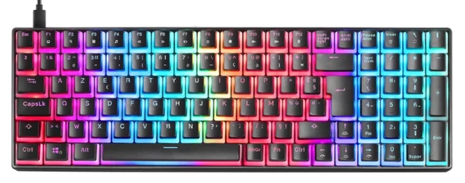
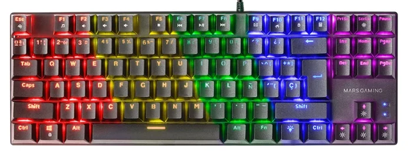
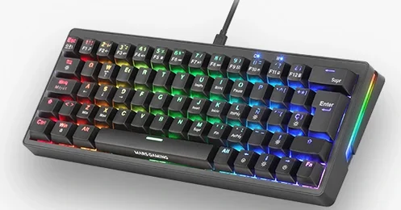
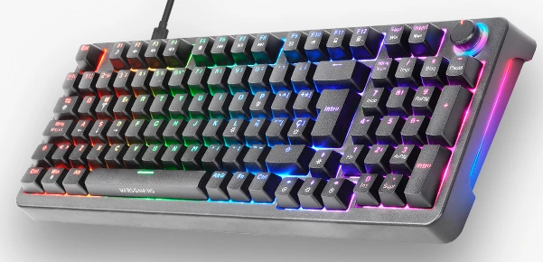

Los Mejores Teclados Mars Gaming de 2025 Probados por un Experto

Contenido actualizado en mayo de 2025
Soy Carlos López, analista con más de 15 años de experiencia probando teclados gaming . En esta guía verás una comparativa real con los mejores modelos de teclados Mars Gaming que he probado personalmente en juegos, trabajo y uso intensivo. Si estás pensando en la marca Mars Gaming para comprar un teclado fiable, económico y con buen rendimiento, esta página es justo lo que necesitas. Esta guía incluye enlaces de afiliado sin coste adicional para ti. Nos ayudan a mantener el sitio actualizado con análisis imparciales.
Si lo que buscas son los mejores teclados gaming de 2025 sin importar la marca, tienes esta otra guia de compra.
Índice de Contenidos
- ¿Qué es un teclado gaming?
- ¿Por qué deberías comprar un teclado Mars gaming?
- Comparativa real de teclados Mars Gaming
- ¿Cuál compraría yo?
- Preguntas frecuentes
¿Qué es un Teclado Gaming?
Un teclado gaming no es simplemente un teclado con luces. Se trata de dispositivos diseñados pensando en la precisión, la velocidad de respuesta y la resistencia. Cuando estás en medio de una partida, cada milisegundo cuenta, y un buen teclado puede ser la diferencia entre ganar o perder. Como gamer y analista, valoro mucho que un teclado gaming responda de forma rápida, cómoda y fiable.
¿Por qué deberías comprar un teclado Mars gaming?
- ✅ Un teclado Mars Gaming ofrece gran rendimiento sin gastar de más.
- 🎮 Cada teclado Mars Gaming está diseñado para gaming: rápidos, precisos y duraderos.
- 🔧 Hay teclados Mars Gaming para todos los gustos: desde modelos compactos hasta completos con macros y RGB.
- 🔄 Si buscas un teclado mecánico Mars Gaming , tienes opciones con switches OUTEMU, hot-swap y formatos TKL o 60%.
- 💸 Los teclados Mars Gaming destacan por su increíble relación calidad-precio.
- 🧠 Son ideales tanto para jugar como para trabajar , gracias a su ergonomía y buen tacto.
Comparativa real de los mejores teclados Mars Gaming de 2025 (probados en juegos reales)
Mars Gaming MKXTKL

⭐ Valoración del experto: 4/5
He probado el Mars Gaming MKXTKL durante varias sesiones de juego y ha superado mis expectativas. Su diseño compacto TKL me permitió mover el ratón con mayor libertad, algo esencial en shooters. Los switches OUTEMU SQ ofrecen una respuesta nítida y rápida, muy útil en situaciones de presión. El teclado se siente firme sobre la mesa, sin deslizamientos, y la iluminación RGB es sobria pero efectiva. Además, el reposamuñecas desmontable mejora el confort durante sesiones largas sin añadir volumen innecesario.
Mars Gaming MKULTRA
⭐ Valoración del experto: 5/5
El Mars Gaming MKULTRA lo he usado tanto para trabajo como para gaming y se comporta muy bien en ambos casos. Su formato 96% conserva el teclado numérico sin ocupar tanto espacio como uno full-size. Los switches son agradables al tacto, con una pulsación silenciosa y estable. El reposamuñecas incluido mejora bastante la postura en sesiones largas. La iluminación RGB es intensa gracias a las teclas PBT Pudding, y el software permite muchas opciones de personalización.
Mars Gaming MK80
⭐ Valoración del experto: 4.5/5
He utilizado el MK80 durante varios días y me ha parecido una opción muy sólida para quienes buscan buen rendimiento a bajo coste. Su tamaño TKL es ideal si necesitas más espacio para el ratón. Los switches ofrecen una pulsación mecánica firme, sin excesivo ruido. La iluminación RGB se puede ajustar fácilmente con combinaciones de teclas. En general, ofrece una experiencia mecánica bastante completa para su rango de precio.
Mars Gaming MKMINIPRO
⭐ Valoración del experto: 4/5
He probado el MKMINIPRO en un entorno de escritorio minimalista y también como teclado portátil. Su diseño 60% ayuda a liberar espacio y resulta cómodo de transportar. Los switches hot-swap permiten personalizar la experiencia sin herramientas. Pese a su tamaño, la construcción es muy sólida y estable. Su iluminación RGB dinámica es vibrante y configurable, ideal para setups llamativos.
Mars Gaming MKPRO
⭐ Valoración del experto: 5/5
Tras varios días de uso intensivo con el MKPRO, puedo confirmar que es un teclado robusto y fiable. Los switches mecánicos ofrecen una pulsación precisa, ideal tanto para gaming como para tareas de escritura. La carcasa de aluminio transmite una gran sensación de calidad. Además, la retroiluminación RGB es completamente configurable y muy brillante. En mi experiencia, es una opción muy completa para quienes buscan un teclado profesional sin gastar una fortuna.
¿Cuál compraría yo? El mejor teclado calidad/precio
Después de probar a fondo todos los teclados Mars Gaming de esta lista, personalmente me quedo con el Mars Gaming MKPRO. Me ha convencido por su equilibrio perfecto entre rendimiento, durabilidad y estética. Sus switches mecánicos son muy precisos, la estructura de aluminio le da una solidez premium, y la retroiluminación es realmente personalizable. Si quieres algo serio para jugar y trabajar, sin duda es una apuesta segura.
⌨️ Ver oferta actual en AmazonPreguntas Frecuentes (FAQ)
¿Dónde comprar un teclado con garantía?
Recomendamos comprar en Amazon porque ofrece garantía oficial, envíos rápidos, y muchas veces tiene ofertas con envío gratuito. Además, puedes devolver el producto fácilmente si no estás satisfecho.
¿Puedo usar un teclado gaming para trabajar también?
Totalmente. Muchos de sus modelos tienen diseños profesionales y switches cómodos que funcionan bien tanto para jugar como para escribir durante horas.
¿Son ruidosos los teclados Mars Gaming?
Depende del modelo. Algunos tienen switches más silenciosos, mientras que otros están diseñados para ofrecer una respuesta táctil más sonora.
¿Cuál es el teclado de la comparativa más compacto?
El MKMINIPRO, con formato 60%, es perfecto si buscas ahorrar espacio o si necesitas un teclado portátil sin perder funcionalidades.
⌨️ Comprar Mars Gaming MKMINIPRO en Amazon¿Son buenos los Mars Gaming para juegos competitivos?
Sí. Modelos como el MKPRO o MKMINIPRO ofrecen una respuesta muy rápida y una gran precisión, ideales para juegos como Valorant, CS2 o Fortnite.
⌨️ Comprar Mars Gaming MKMINIPRO en Amazon ⌨️ Comprar Mars Gaming MKPRO en Amazon¿Qué ventajas tienen los teclados Mars Gaming?
Los teclados Mars Gaming ofrecen una gran relación calidad-precio, con funciones avanzadas como retroiluminación RGB, diseños compactos y switches mecánicos fiables.
¿Qué teclado Mars Gaming es el más completo en 2025?
Si estás buscando un teclado que ofrezca buena construcción, iluminación RGB, y switches mecánicos fiables, el modelo MKPRO destaca por su equilibrio entre calidad y precio.
⌨️ Comprar Mars Gaming MKPRO en Amazon¿Qué ventajas tienen los teclados Mars Gaming frente a otras marcas?
Los teclados Mars Gaming ofrecen funciones que suelen encontrarse en gamas más altas, como diseño compacto, personalización de iluminación y switches mecánicos por un precio asequible. Son ideales si quieres rendimiento sin gastar de más.
¿Cuál es el mejor teclado mecánico Mars Gaming para jugar?
Entre los modelos disponibles, el teclado mecánico Mars Gaming MKULTRA es ideal para quienes buscan un formato compacto con buena ergonomía y switches silenciosos. También el MKPRO destaca por su pulsación firme y carcasa de aluminio.
⌨️ Comprar Mars Gaming MKULTRA en Amazon ⌨️ Comprar Mars Gaming MKPRO en AmazonConclusión: ¿Qué teclado Mars Gaming comprar en 2025?
Después de analizar a fondo cada teclado, queda claro que la marca ofrece opciones de calidad para todo tipo de usuarios. Ya busques un modelo compacto, uno profesional o un diseño 60%, siempre encontrarás un Mars Gaming teclado que se ajuste a tus necesidades.
La variedad de Mars Gaming teclados permite elegir según tu estilo de juego o espacio disponible. Si prefieres una experiencia premium, el MKPRO es ideal; si buscas portabilidad, el MKMINIPRO es excelente.
Además, si lo que necesitas es un teclado mecánico Mars Gaming , hay varias opciones con switches OUTEMU y RGB configurable, tanto en formato TKL como full-size.
En resumen, los teclados Mars Gaming destacan por su relación calidad-precio, diseño atractivo y rendimiento probado. Sea cual sea tu caso, esta guía te ayudará a encontrar el mejor Mars Gaming teclado para ti.